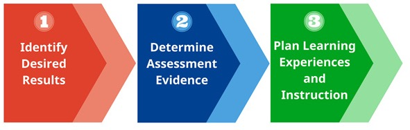

從陪聊到動手——AI走進閱讀課
115 精進計畫｜高雄市輔導團研習：AI 應用在閱讀輔助力
Table of Contents
1. 研習資訊
- 日期：2026-05-07（四）
- 主題：AI 應用在閱讀輔助力
- 對象：高雄市國中輔導團
- 講者：臺南一中 顏永進
- 主軸：從陪聊到動手 -_-
2. 時間軸
| 時段 | 區塊 |
|---|---|
| 09:30–11:00 | 第一部分：實作——從陪聊到動手 |
| 11:00–11:10 | 休息 |
| 11:10–12:10 | 第二部分：模型、代理人與你 |
| 12:10–12:30 | 綜合座談 |
3. 今天要做什麼？
- PART #1: 很多人以為 AI 就是「幫你出個題目、改一篇作文」，但真正能解放老師的用法，是「讓 AI 幫你把整堂課備出來」。
- PART #2: 讓AI幫你自動生成整份文件只是開始，我們要從這裡出發，讓AI開始控制你的電腦，再看看代理人能做到什麼程度。
主題素材： 橋頭糖廠——台灣第一座新式糖廠（1901）
老師走完一次「AI 輔助備課」流程，產出一份完整教案。今天的主題只是例子——同一套流程可以套到任何閱讀素養單元：〈背影〉、〈兒時記趣〉、左營眷村、美濃水圳……，也可以套用到其他領域。
| 階段 | 你做什麼 | 帶走的東西 |
|---|---|---|
| 讀 | NotebookLM 讀史料、產研究筆記 | 研究筆記＋完整參考文獻（Word） |
| 畫 | Napkin 畫兩張視覺化圖 | 因果關係圖＋時間軸（兩張 PNG） |
| 學 | Claude 生簡單學習單（學生最終要會的事） | 一份學習單（Word） |
| 教 | Claude 倒推設計完整教案（以能做完學習單為目標） | 一份跨領域閱讀教案（Word） |
跑 4 步，Claude 用兩次但 每次都聚焦單一任務 ——這是專為免費版 token 額度設計的拆分流程。一小時後，你手上會有：研究筆記、兩張圖、學習單、教案。學習單是學生拿在手上做的，教案是你自己上課用的。
3.1. 為什麼挑「橋頭糖廠」？
- 高雄在地連結最強 ——橋頭糖廠就在高雄市橋頭區（學生搭高捷紅線就到），輔導員回去帶班特別有感
- 直接對應 108 課綱 ——國中歷史八上「日治時期經濟發展」單元。橋頭糖廠是課本主文中常被簡略帶過、但剛好可以作為「閱讀素養延伸個案」的代表
- 跨領域閱讀素材 ——歷史、公民、國文都能用，國文輔導員可拉社會老師共備
- 公開素材豐富 ——維基、台糖官網、地方文史，NotebookLM 餵得進來
4. AI 使用的五個層次
| 階段 | 做法 | 代表工具 |
|---|---|---|
| Lv.1 問答機 | prompt → copy → paste | ChatGPT 網頁版 |
| Lv.2 整合工作流 | 串接各種AI服務的優勢 | NotebookLM + Napkin + Claude / Gemini + Gamma |
| Lv.3 初級助理 | AI 自己規劃步驟、操作電腦完成任務 | Claude Code、Gemini CLI |
| Lv.4 進階助理 | 你規劃步驟，AI 操作電腦 | Claude Code 客製 Skill、n8n |
| Lv.5 專屬助理 | AI 規劃步驟＋操作電腦 | OpenClaw、Hermes |
5. PART #1：實作1——從陪聊到動手（9:30–11:00）
5.1. 這三年 AI 升級了什麼
- 2023：會聊天（ChatGPT 爆紅）
- 2024：住進工具裡（NotebookLM、Gemini in Workspace、Copilot）
- 2025：會動手（Claude Code、Gemini CLI、Atlas 瀏覽器）
- 2026：被訓成你的專屬助理（Skills、MCP）、主動幫你完成一些例行性工作
5.2. PART #1目標
- 從「AI 是個工具」升級到「AI 可以幫我完成一整套流程」
- 今天的課文只是一個例子，同一種方法你可以應用到不同領域、科目，生成不同內容
5.3. 方法：逆向設計（Backward Design）
我們今天跑的流程，其實是一個老師熟的方法： 逆向設計 ——Wiggins & McTighe 在 Understanding by Design (1998) 提出的三階段教案設計法。
我不是先列「AI 工具有哪些」再帶你們玩。我是 *先決定「學生上完這堂課要會什麼」，再倒推每一步*：
- 學生最終要會的事 = 做完一份學習單 （Step 3 的產出）
- 要產出學習單 → 前面要有研究筆記（題目從哪來）
- 要有完整教案 → 前面要先有學習單（教案的目標就是「讓學生做完這份」）
- 要有教案的視覺輔助 → 前面要有兩張圖
- 要有研究筆記與兩張圖 → 前面要有對的素材清單
從終點往回排—— AI 不是替你決定要去哪，是你決定了之後，AI 替你跑完路線。
這就是 UbD 的核心：「學習單」是 Stage 1（學生要展現什麼能力）、「教案」是 Stage 3（怎麼教學生達到那個能力）。先有 1 才有 3。
5.4. Step 1：NotebookLM——讀懂課文＋產出研究筆記
5.4.1. 先看 Lv.1 的限制
打開 ChatGPT，直接問：
請介紹橋頭糖廠的歷史與重要性。
ChatGPT 會給你一個流暢的答案，但：
- 多半只講「台灣第一座新式糖廠」的觀光導覽版，不會主動提到甘蔗農剝削、二林事件這條線
- 「為什麼選橋仔頭設廠」背後的水源／鐵道／交通條件可能寫錯
- 沒有出處——你不知道哪一句可以寫進備課單
- 想拿來教「閱讀素養」中的「省思評鑑」層次，這份答案根本不夠用
這就是 Lv.1 的極限。接下來換 Lv.2 的方式。
5.4.2. 上傳素材到 NotebookLM
打開 NotebookLM（用 Google 帳號登入），把以下五個網址直接 貼 到「來源」欄位（NotebookLM 會自動抓網頁內容）：
- 橋頭糖廠——維基百科
- 橋頭糖廠——台糖官網（觀光園區介紹）
- 臺灣糖業的源起之地——橋頭糖廠時空巡禮（方格子）——*本場研習的關鍵素材*
- 糖業王國興衰路——橋頭糖廠（方格子）——產業變遷視角
- 橋頭糖廠——台灣製糖工廠百年文史地圖
更多素材見底下「素材清單」。
📌 網址 vs PDF 的差別 （給認真想拼品質的老師看）：
| 來源型態 | NotebookLM 解析品質 | 操作成本 |
|---|---|---|
| 直接貼網址 | 中: 會把網頁的 navbar、廣告、相關文章等雜訊一併抓進來，內容被稀釋 | 低（一鍵貼） |
| 上傳 PDF | 高: 只抓文字主體，引用更準、quote 更乾淨 | 高（每篇要先「列印 → 另存 PDF」） |
研習當天我們走「貼網址」省事；如果你回家想為某個重要單元拼到極致，把網頁先存 PDF 再上傳，NotebookLM 給的內容深度會明顯不同。
5.4.3. 換別的課文/領域怎麼找素材？
研習當天我幫你準備好橋頭糖廠的清單，但回家備別的主題或課文時你得自己找。三招：
第 1 招：用 NotebookLM 內建的「探索」（在網路上搜尋新來源/Discover sources）
進入 NotebookLM → 新增筆記本 → 點 「Discover sources」 → 輸入主題 → NotebookLM 自動建議 10 份網路素材，一鍵加入。最省時的方法。
第 2 招：請 AI 開一份「分層素材清單」
打開 ChatGPT 或 Gemini，貼這段 prompt：
我要為國中生上 XX 這個閱讀素養主題，準備寫一份完整教案。請給我 10 份網路上能找到的素材清單，分三類： 一、權威來源（維基百科、教育部、學術論文、文學館資料庫） 二、教師社群分享（教學案例、共備講義、評析文章） 三、批判閱讀對照組（媒體報導、部落格、聳動標題、爭議觀點） 每份附上完整 URL 與一句話介紹。
第三類「批判閱讀對照組」特別值得花心思——它就是課堂上「文宣表面 vs 史料真相」的對照素材。例如橋頭糖廠的旅遊文宣寫「百年糖業文化」，史料寫「甘蔗農抗爭」，這兩種敘述的落差就是這類。
第 3 招：AI 找的素材一定要逐個點開驗證
- AI 會幻覺出 根本不存在的網址
- AI 會把不同文章的內容混搭成「假摘要」
- 看清楚： 誰寫的、什麼時候寫的、立場是什麼
點不開的丟掉、來源可疑的丟掉。剩下的才上傳到 NotebookLM。
5.4.4. 依序問四個問題
5.4.4.1. 第 1 問（大方向）
根據這些資料，日本人為什麼在 1901 年選擇橋仔頭設立台灣第一座新式糖廠？背後有哪些關鍵的時代背景？
5.4.4.2. 第 2 問（追細節）
橋頭糖廠選址橋仔頭的具體條件是什麼（水源、交通、地理、政策）？請引用史料說明。
5.4.4.3. 第 3 問（文宣 vs 史料——本場核心）
觀光導覽／旅遊文宣多半把橋頭糖廠寫成「百年糖業文化」、「五分車記憶」這類懷舊風，但同時期的甘蔗農生計、剝削問題、二林事件之類的史料寫的是另一回事。這兩種敘述的落差是什麼？該怎麼跟學生討論？
5.4.4.4. 第 4 問（教學切入）
如果我要為國中生設計閱讀三層次提問（事實／推論／評價），這個主題各層次可以怎麼問？請每層各給三題，並標示出處段落。
5.4.5. 請 NotebookLM 幫你打包
問完之後，貼這段指令讓它整合：
請把我們剛才所有對話整合成一份「主題研究筆記」，這份筆記接下來要餵給 Claude 寫教案。格式如下：
一、主題基本資訊：題目、年代範圍、地理位置
二、關鍵史實：列出所有重要事實。每個事實點必須：
(a) *直接引用原文一段* （用「」標出，至少 15 字）
(b) 後面標來源編號 [X]
(c) 不能引出原文的事實，整個不要列——寧可少寫，不要編造
範例格式：
「1901 年 2 月 15 日，臺灣製糖株式會社開始於臺南廳橋仔頭建廠。」[1]
三、分類整理：自然條件、政策背景、企業考量、戰略需求等
四、文宣表面 vs 史料真相：旅遊文宣與真實史料的落差，這是教案中的批判閱讀切入點。兩種敘述各引原文一段
五、教學提問素材：三層次題組初稿（事實層／推論層／評價層各 3 題，每題附對應原文段落）
六、 *完整參考文獻清單* ：列出每一份資料的作者、文章名稱、出處、網址，按編號排列；之後 Claude 寫教案時要直接引用
七、 *視覺化用條列* （之後要直接貼給 Napkin 畫圖用，請寫成乾淨的條列）：
(甲) 選址原因因果關係圖（5-6 條）：
例如：「自然條件：水源充足（中崎溪）、氣候適合甘蔗、地勢平坦」
涵蓋面向：自然條件／交通條件／政策推動／企業考量／戰略需求
(乙) 橋頭糖廠時間軸（5-8 個節點）：
例如：「1901 台灣製糖株式會社成立，選定橋仔頭設廠」
涵蓋從建廠（1901）到現在（轉型文化園區）的關鍵事件
⚠️ 為什麼第二條那樣寫 ——NotebookLM 的出處編號偶爾會錯亂（編號跳號、不同編號指到同一來源、或編號跟內容對不上）。 強迫它「引用原文」 是預防錯亂最有效的方法：模型必須真的回去看 chunk，編號才能對得起來。
⚠️ 第 5、6、7 條特別重要 ：
- 第 5 條讓 Claude 不用自己重新出題（省 token、品質穩）
- 第 6 條讓 Claude 不用編造引用文獻
- 第 7 條讓 Step 2 Napkin 直接複製貼上、不用老師再從研究筆記裡抓重點
少了任一條，後面的 Step 都會變糊或變麻煩。
5.4.6. 萬一 NotebookLM 的編號還是錯了——三層補救
即使有了預防 prompt，編號仍可能少數錯亂。由輕到重：
*追加引述要求*：貼下面這段叫它重做
請逐一核對你剛才產出的研究筆記中所有的出處編號 [X]。 針對每一個事實點，回去檢查標註的來源是否真的包含那段引言。 錯的編號改正、找不到對應原文的事實整個刪除（寧可少寫不要編）。 重新輸出修正後的研究筆記。
*自我核對表*：要它列出對照表
請列出剛才研究筆記中所有出處引用，格式： | 事實點 | 標註來源 [X] | 該來源實際是否提到此事實 | 結論（保留/刪除/改成 [Y]）| 核對完，重新輸出修正後的研究筆記。
- 核武器：重開筆記本 ——把對話關掉、新建 notebook、重新上傳素材、重貼 4 問與打包指令。LLM 的隨機性這次反而幫你修錯。代價：之前的追問脈絡消失。
5.4.7. 匯出成 Word 檔
操作步驟：
- 在回答下方點「儲存到記事」
- 到「工作室」找到記事 → 點「匯出至文件」→ 拿到 .docx
5.4.8. 老師的把關時間——人工檢視研究筆記
打開剛才匯出的 .docx，花 5-10 分鐘做三件事:
| 動作 | 為什麼要做 |
|---|---|
| 讀一遍，刪掉錯的 | NotebookLM 雖然有出處標註，但仍可能抄錯年代、人名、地名——你身為老師，知道哪些細節怪 |
| 核對出處編號是否對 | NotebookLM 的 source attribution 偶爾會錯亂：編號跳號、不同編號指到同一來源、編號跟內容對不上。逐一點開編號驗證，錯的直接改 |
| 砍掉重複、冗餘 | 來源彼此重疊時，NotebookLM 會把同一件事講三次。挑最完整的留、其他刪——*這也直接省下 Step 3、4 的 Claude token* |
| 補上你自己的判斷 | NotebookLM 給的是「資料整合」，不是「教學判斷」。在筆記中加幾句「↑這段適合放教材分析」「↑這段太硬，國中生看不懂」這類旁註，後面 Claude 會看到 |
- AI 的強項是 整合分析資料 ，不是 判斷教學適切性 ——後者只有老師會
- 後面 Claude 寫教案時會把研究筆記內容直接抄進去，*你刪掉的，學生才不會看到*
- 出處編號錯的話特別嚴重 ——Claude 會把錯誤的編號排進教案的「參考文獻」段，學生／審查委員一查就翻車
⚠️ *如果出處編號錯太多，重新打包一次*：回到 NotebookLM 對話框，貼一樣的「打包指令」再跑一次。NotebookLM 重新生成時，編號通常會修正（這是 LLM 的隨機性反而幫你修錯）。
完成檢視後，存檔（建議命名 research-notes-reviewed.docx ）。 這個檔案才是 接下來兩步的素材庫——它會直接餵進 Step 3 與 Step 4 的 Claude。
5.5. 課程設計邏輯: Ubd
以下的課程設計採用UbD (Understanding by Design/重理解的課程設計)的方式，UbD也稱「逆向設計/Backward Design」，是由 Grant Wiggins 與 Jay McTighe 於 1998 年提出的教學設計框架。其核心理念是「以終為始」(Begin with the end in mind)，主張在規畫具體的教學活動前，必須先明確定義學習者最終應達成的「理解」與「成效」。

Figure 1: UbD 的三個階段
5.6. Step 2：Napkin——畫兩張視覺化圖
Napkin 是 用文字 prompt 一鍵生視覺化 的工具——你給它一段條列文字，它生流程圖、矩陣、樹狀圖給你選。*
5.6.1. 教案中的視覺化邏輯：
- 圖 1（因果關係圖） ：回答「為什麼」——選橋仔頭的多重原因
- 圖 2（時間軸） ：回答「然後呢」——從 1901 到現在的演變
5.6.2. 操作流程
打開 Napkin（用 Google 帳號免費登入）。
📌 素材在哪裡 ：打開 Step 1 的 research-notes-reviewed.docx ，找到 第七節「視覺化用條列」 ——NotebookLM 已經幫你寫好兩段條列，分別對應兩張圖。直接複製貼到 Napkin 就好。
圖 1：選址原因因果關係圖
從研究筆記第七節 (甲) 複製整段選址原因條列 → 新建 Napkin 文件 → 貼上 → Napkin 自動生成多種視覺化方案 → 挑「因果／放射狀」風格 → 下載 PNG（命名 fig1-causes.png ）
圖 2：橋頭糖廠時間軸
從研究筆記第七節 (乙) 複製整段時間軸條列 → 新建 Napkin 文件 → 貼上 → 挑「時間軸（Timeline）」風格 → 下載 PNG（命名 fig2-timeline.png ）
→ 老師手上會有兩張 PNG，待會上傳給 Claude。
⚠️ 如果第七節內容單薄或不對 ——回 Step 1 的「人工檢視時間」補強，或回 NotebookLM 對話框追問：
請把研究筆記第七節（視覺化用條列）的兩個條列補完整： (甲) 選址原因要涵蓋自然/交通/政策/企業/戰略 5 個面向，每點要有具體細節 (乙) 時間軸要從建廠到現在，至少 6 個關鍵節點，含年代與事件
5.7. Step 3：Claude——生簡單學習單（先決定終點）
場景：在備教案之前，先想清楚「學生最終要做完什麼」。學習單就是答案。
5.7.1. 為什麼學習單先做？
UbD 的精神：先決定「學生要會什麼」，再倒推「教師要教什麼」。
如果先寫教案、後做學習單，常出現的問題是：教案寫得很漂亮、流程很豐富，但回頭做學習單時發現「咦，這些活動跟學習單對不上」——只好兩邊互相妥協。
倒過來做：先讓 Claude 產出一份簡單的學習單，再以「能讓學生完成這份」為目標生教案，邏輯一致、活動聚焦。
5.7.2. 操作流程
建議開新對話 ——這是 Claude 第一次出場，給它乾淨的脈絡。
老師上傳一個檔案：
- Step 1 的研究筆記
research-notes-reviewed.docx
請根據附件研究筆記，為「橋頭糖廠」這個閱讀素養主題設計一份簡單的學習單，輸出為 Word 檔（.docx）。 【學習單結構】（A4 雙面內，不要太長） 1. 抬頭：班級／座號／姓名／日期填寫格 2. 暖身題（1 題）：連結學生生命經驗的開放題（例：「你經過過糖廠／類似的舊工業區嗎？當時的感覺？」） 3. 精讀題（5 題）：直接從研究筆記中的三層次題組挑選，事實層 2 題、推論層 2 題、評價層 1 題，每題下方留 3-4 行空白 4. 小組討論題（1 題）：「文宣表面 vs 史料真相」對照題，留半頁空白 5. 學完寫一寫（1 題）：給能力較強的學生延伸寫作，例：「你會怎麼跟外地朋友介紹橋頭糖廠？」 【格式要求】 - 字級不小於 12pt、行距 1.5、學生看得清楚 - 全部留學生填寫的空白格／橫線 - 對象國中生（13-15 歲），用語要貼近這個年齡 - 不要分能力版本，一份就好 完成後請在回答開頭簡述「我從研究筆記挑了哪 5 題進精讀題」，方便老師驗收。
5 分鐘後 → Claude 產出 Artifact → 下載 worksheet.docx
5.7.3. 帶走的觀念
- 學習單是「學生最終要會什麼」的具體呈現——比抽象的「學習目標」更具體
- 學習單做完，下一步教案的「教學流程」就有清楚的目標：每個活動都要對應到學習單某一段
- AI 5 秒做好排版、留白、橫線——老師最花時間的部分被消化掉了
5.8. Step 4：Claude——倒推設計完整教案（壓軸）
場景：學習單已經有了（學生最終要做完的東西）。現在請 Claude 倒推設計教案：教學流程的每一步，都要對應到學習單的某一段。
5.8.1. 這是研習的最強展示
同一個 prompt，Claude 同時做四件事——
- 讀學習單，反推「學生要會什麼」
- 抽取教案範本的格式結構
- 設計教學流程——每個活動對應到學習單的某個段
- 把上傳的兩張 PNG 直接嵌進 docx 對應段落
整個過程 零人工介入 ——示範時就講這句話：「我按下送出，下次再碰電腦的時候，已經是下載完成的教案 .docx 了，而且每個活動都跟學習單對得起來。」這就是 Lv.3 + UbD 的真貌。
5.8.2. 操作流程
建議開新對話 ——避免繼承 Step 3 的對話歷史，token 從 0 累積。
老師上傳四個檔案：
- Step 1 的研究筆記
research-notes-reviewed.docx - Step 2 的兩張圖
fig1-causes.png與fig2-timeline.png - Step 3 的學習單
worksheet.docx - *教案格式範本*：基隆市 openclass〈兒時記趣〉教案 (.docx)（先下載到桌面）
📌 Claude 免費版會把 PNG 嵌進 docx ——產出 Artifact 時自動把上傳圖檔打包進 docx 的 word/media/ 裡，並在指定段落嵌入。老師下載後直接打開就能看到完整圖文整合的教案。
請整合附件素材，為「橋頭糖廠」這個跨領域閱讀素材產出一份完整教案，輸出為 Word 檔（.docx）。 【UbD 核心原則——這是這份教案的設計邏輯】 附件中有一份「學習單.docx」，那是學生最終要做完的東西。 請以「能讓學生完成這份學習單」為目標，倒推設計教學流程。 每一個教學活動都要明確對應到學習單的某一段（暖身題／精讀題／小組討論／延伸寫作）。 【格式要求——逐字遵守】 我上傳了一份教案格式範本（〈兒時記趣〉教案），請你： 1. 先打開這份範本，把「結構」抽出來：有哪些欄位、欄位的順序、表格、標題層級、字體大小。 2. 完全照搬這個結構。欄位名稱不要自己改。 3. 範本沒有的欄位（例如跨域延伸、與學習單對應表），補在最後但沿用範本的樣式。 4. 字型：中文用標楷體或新細明體（依範本）、英數用 Times New Roman。 5. 完成後請在回答開頭列出兩件事：(1) 我從範本抽出的結構清單；(2) 教學流程哪一段對應到學習單哪一題。 【內容要求】 基本資訊： - 主題：橋頭糖廠——台灣第一座新式糖廠（1901） - 屬性：跨領域閱讀素養素材（國文／歷史／公民） - 對象：國中（13-15 歲） - 節數：3 節（共 135 分鐘） 教案需包含： 1. 教學目標（對應 108 課綱閱讀素養指標、對應到學習單預期能力） 2. 教材分析（主題特色、學習難點、文宣表面 vs 史料真相的教學切入） 3. 教學流程（每節分「引起動機 / 發展活動 / 綜合活動」三段，標註時間，每段註明「對應學習單第幾題」） *請把附件 fig1-causes.png 嵌入「教材分析」欄位末尾，置中、寬度約 14cm* *請把附件 fig2-timeline.png 嵌入「教學流程」欄位最開頭，置中、寬度約 14cm* 4. 提問設計（直接用研究筆記中的三層次題組） 5. 評量方式（形成性 = 學習單填寫狀況；總結性 = 學習單品質） 6. 跨域延伸建議（歷史科：日治糖業與經濟；公民科：在地產業變遷與社會影響） 7. 參考文獻（根據研究筆記中的清單，按編號排列，至少 5 篇） 【嚴格規則】 - 兩張圖 *必須* 嵌入指定段落，不要替我留佔位框 - 教學流程跟學習單必須對得起來，不要兩邊各自漂亮 - 引用的具體事實（年代、人名、地名）必須跟研究筆記一致，不要自己編 - 語氣自然、不要太教條
5-10 分鐘後 → Claude 產出 Artifact → 下載 .docx → 老師打開直接看到完整教案＋兩張圖
5.8.3. 下載後的檢查清單
- 兩張圖是否真的嵌進對應段落？（最容易出包）
- 教學目標是否真的對應到你的班——AI 寫得很「漂亮」但可能離地
- 時間分配是否合理——AI 排出來的時間常常不夠，要實際走一遍
- 評量規準是否真的可評？還是只是好看的形容詞？
- 引用的具體事實（年代、數字、人名）是否正確？AI 會編
- 跨域連結——你的學校有沒有可以合作的歷史／公民老師？
5.8.4. 帶走的觀念
- 先做學習單再做教案 是 UbD 的精髓——終點先定，路線才不會走偏
- 一份教案的「正文」AI 能寫，但「教學現場感」要老師補
- 把今天的教案＋兩張圖列印出來，下週直接走
- 對輔導團特別重要 ：你帶回去的不是「我會用 AI」，是「一套可以複製給其他老師的備課流程」
5.9. 本日回顧
| 階段 | 成品 |
|---|---|
| 讀 | NotebookLM 研究筆記＋完整參考文獻（Word） |
| 畫 | Napkin 因果關係圖＋時間軸（兩張 PNG） |
| 學 | Claude 學生用學習單（Word） |
| 教 | Claude 跨領域閱讀教案（Word，含內嵌圖、對應學習單） |
Claude 用兩次但 每次都聚焦單一任務 ——學習單先做（決定終點），教案後做（倒推流程）。這是 UbD 的標準做法，也是 token 友善的設計。
一小時前你還在煩這個跨領域主題怎麼上，現在你下週的課已經備完。回去帶班的延伸價值：
- 跨域共備：可拉歷史、公民老師一起跑同一主題
- 探究學習：教學流程裡的提問題組可以拆出來給學生做小型研究
- 方法傳出去：同一套流程套到〈背影〉、〈兒時記趣〉、左營眷村……都能跑
6. 休息（11:00–11:10）
7. PART #2：實作與示範——模型、代理人與你（11:10–12:10）
7.1. 代理人 Lv.3｜讓 AI 動手操作你的電腦
到 PART #1 結束為止，所有動作都還關在「網頁」裡——AI 的能力被瀏覽器這個玻璃罩罩住了。
Lv.3 是把玻璃罩拿掉，AI 直接操作你的檔案系統 。
7.1.1. Demo：整理桌面那堆亂七八糟的資料夾
先下載練習資料夾 ：test-cleanup.zip（50 個模擬檔案：教案、學習單、學生作品、成績、簡報，全部混在一起）
下載後解壓縮到桌面，會看到 ~/Desktop/test-cleanup/ 資料夾。
開終端機：
cd ~/Desktop/test-cleanup gemini
啟動 Gemini CLI（裝法見附錄）後，丟一句中文：
桌面這堆檔案太亂了。請幫我： 1. 看一下有哪些檔案，按主題（教學素材／研習／學生作品／私人雜項）分類 2. 為每一類建一個子資料夾、把檔案移進去 3. 給每個資料夾用 macOS Finder 標籤上不同顏色 （請用 `tag -s <顏色> <資料夾>` 命令，-s 表示「替換」而非「附加」，避免標籤疊加） 建議顏色：教學素材→Blue、研習→Green、學生作品→Yellow、私人雜項→Gray 4. 完成後給我一份「整理報告」（有哪些檔案動了、放哪了、上了什麼顏色）
按 Enter 後，現場看 Gemini CLI 自己跑：
- 讀目錄、列檔案 → 「我看到桌面有 47 個檔案、3 個資料夾」
- 分析檔名、分類 → 「我建議分成：教學素材、研習筆記、學生作品、雜項」
- 每一步問你
Y/N才動手 → 你按確認，它建檔、移動、上色 - 完成後給報告 → 「47 個檔案分入 4 個資料夾，已上色」
90 秒後，桌面乾淨。
7.1.2. 重點不是「整理桌面」這件小事
是「AI 出了瀏覽器、進入你的檔案系統」這個門檻。
跨過這道門，所有「在電腦上重複做的雜事」都能交給 AI：
- 備課素材按單元歸檔
- 班級照片批次改名（=20260507_班級活動_001.jpg=）
- 學生繳交檔案統計、缺交清單
- 會議錄音批次轉文字
- ……
7.1.3. 紅線
- 第一次玩，先在 不重要的資料夾 試手感（別直接拿桌面開刀，萬一翻車很慘）
- Gemini CLI 每一步動手前都會問你
Y/N，看清楚再按 - 重要檔案永遠要先備份
7.2. 代理人 Lv.4｜把今天的流程「凍結」成 Skill
場景：今天我們花 90 分鐘做完橋頭糖廠這個主題。下禮拜你要備〈兒時記趣〉、〈麥琪的禮物〉，或者「左營眷村文化」、「美濃水圳」這些跨域主題……每一個都要重新貼今天這幾段 prompt 嗎？
7.2.1. Prompt 是封信，Skill 是 SOP
| Prompt | Skill |
|---|---|
| 寫一封信，寄完就丟 | 訂一個 SOP，永遠跟著用 |
| 每次重新打 | 寫一次，AI 一直照做 |
| 你給 AI 一個任務 | 你給 AI 一份「流程說明書」 |
| 「請為橋頭糖廠寫教案」 | 「請用閱讀教案流程處理 X」 |
下次打開 Claude，你只要說一句：
請用閱讀教案流程，為「左營眷村文化」產出國中跨領域閱讀教案。 研究筆記與兩張圖附後。
然後上傳素材——AI 自己跑完整套整合，產出教案 docx。
7.2.2. Demo：現場上傳一個 Skill 看看
📦 *下載連結*：reading-lesson-pack.zip——研習當天會用，研習後可下載自己裝
- 開 claude.ai → 右上頭像 → Settings → Capabilities → Skills → 點「+ Add Skill」
- 把上面下載的
reading-lesson-pack.zip拖進去——裡面就是一份SKILL.md，類似這樣：
--- name: reading-lesson-pack description: 為任何閱讀素養主題（課文或跨領域素材）以 UbD 邏輯生成「學習單＋教案」配對。當使用者上傳「研究筆記＋兩張視覺化圖＋教案格式範本」並要求「跑閱讀教案流程」時觸發。先產出學生用學習單（決定終點），再倒推設計教案（教學流程對應到學習單）；教案含教學目標／教材分析／教學流程／提問題組／評量規準／跨域延伸／參考文獻，內嵌兩張視覺化圖。 --- # 跨領域閱讀教案產生器（UbD 兩階段） 當被要求產出時，分兩個 Artifact 依序產出： **Artifact 1：學生用學習單（先做）** 1. 讀研究筆記，抽出三層次題組 2. 設計簡單學習單：暖身題 1、精讀題 5（從題組挑）、小組討論 1、延伸寫作 1 3. 留學生填寫的空白格與橫線 **Artifact 2：教師用教案（後做，倒推）** 1. 讀剛才的學習單，反推「學生最終要會什麼」 2. 讀範本，抽出格式結構 3. 設計教學流程，每個活動對應到學習單某一段 4. 把兩張 PNG 嵌入指定段落（圖 1 教材分析、圖 2 教學流程） 5. 從研究筆記抽出參考文獻、按編號列在文末 每一步的詳細指令見下方……
- 開新對話，貼一句指令＋上傳素材（研究筆記＋兩張圖＋教案範本），按下送出
- 等 5-10 分鐘 → 學習單＋教案兩份 docx 連續產出
7.2.3. 對比
剛才花 90 分鐘跑完的流程，現在一句話＋一次上傳就搞定。 這就是 Lv.4。
7.2.4. Skill 的本質——升級階梯
| Lv | 你做什麼 |
|---|---|
| 1 | 你會打 prompt |
| 2 | 你會把 NotebookLM、Claude、Napkin 串起來用 |
| 3 | AI 替你跑完整個流程（一句話、多步動作） |
| 4 | 你訂的規則，AI 一直照做（Skill） |
| 5 | AI 規劃步驟＋操作電腦（OpenClaw） |
Skill 把今天的流程，從「每次重新做」變成「一份永遠帶著走的資產」。
*對輔導團特別重要*：你今天傳給其他老師的不再是「我會用 AI」，而是「一份可以複製貼上的流程檔」——這才是「方法傳出去」的真正意思。
7.2.5. 紅線提醒
最後一關永遠是你——AI 交成品，掛名的是你。Skill 跑得再快，每一份產出都還是要老師檢查。
7.3. 你｜什麼東西不該丟雲端？
學生作文、輔導紀錄、IEP、未公開競賽作品——一個判準：
「這段如果被截圖貼到網路上，我會崩潰嗎？」 會 → 別丟雲端。
進階解法（點到為止）：本機 AI（ollama + 開源模型）跑在你筆電上，資料完全不外流。下次研習可以再深入。
7.4. 三個帶走的觀念
- AI 幫你加速，不是幫你代教 ——上課的還是你
- 你給 AI 多少「你的樣子」，它就回給你多少「你的樣子」 ——你的教學風格、你的班、你的判斷，要寫進 prompt
- 一定要自己檢查 ——尤其是引用、題目、史實——AI 會編
8. 綜合座談（12:10–12:30）
Q&A
9. 示範作品——跑完流程做出來長這樣
研習當天提供（預計包含）：
- 橋頭糖廠研究筆記.docx（Step 1 NotebookLM 匯出，含完整參考文獻）
- fig1-causes.png（Step 2 Napkin 因果關係圖）
- fig2-timeline.png（Step 2 Napkin 時間軸）
- 橋頭糖廠學習單.docx（Step 3 Claude 學生用學習單）
- 橋頭糖廠跨領域閱讀教案.docx（Step 4 Claude 倒推設計，含內嵌兩張圖、對應學習單、含參考文獻）
- *reading-lesson-pack.zip*——把整套流程凍結成 Skill，回家可以直接上傳到 Claude 用
10. 素材清單——上傳到 NotebookLM
點開連結 → 瀏覽器 =Ctrl+P=（Mac =⌘+P=）→「儲存為 PDF」→ 上傳到 NotebookLM。
10.1. 主要素材（建議都上傳）
10.2. 更多素材（有興趣再加）
- 橋頭糖廠（台灣糖業博物館）——高雄旅遊網——觀光導覽視角，可當「文宣 vs 史料」對照組
- 台糖文化——高雄市橋頭區公所——在地觀點
- 二林事件、林本源製糖會社相關史料——可在台灣大百科、國家文化記憶庫找
11. 工具準備清單
| 工具 | 費用 | 帳號準備 |
|---|---|---|
| NotebookLM | 免費 | Google 帳號 |
| Claude（網頁／App） | 免費版夠用 | Anthropic 帳號 |
| Claude Code（加分） | 需訂閱 | 研習後再評估即可 |
| Gemini CLI（加分） | 免費（API Key） | Google AI Studio |
12. 附錄：Gemini CLI 安裝（給研習後想自己玩的人）
研習當天我會用我自己預裝好的 Gemini CLI 做 demo（PART #2 的 Lv.3 整理資料夾那段）。如果你回家想自己跑類似的工作，下面是最低門檻的安裝步驟。整套安裝約 5-10 分鐘。
12.1. 1. 裝 Node.js（如果還沒有）
打開 macOS 終端機（=Cmd+空白鍵= → 輸入「終端機」）：
# 用 Homebrew 裝（推薦） brew install node # 或從官網下載 LTS 版本：https://nodejs.org
確認安裝成功：=node –version= 應該回傳 v20.x.x 或更新版本。
12.2. 2. 裝 Gemini CLI
npm install -g @google/gemini-cli
12.3. 3. 領免費 API key
到 Google AI Studio 用 Google 帳號登入 → 點「Create API Key」→ 複製出來。
額度：每分鐘 60 次、每天 1000 次。 不用信用卡 （不像 Claude Code 要訂閱）。一般教師日常用法碰不到上限。
12.4. 4. 第一次啟動
回到終端機：
gemini
第一次跑會問你登入方式，貼上 API key 即可。之後 gemini 一句就啟動。
12.5. 5. 給 Lv.3 demo 用：裝 tag 命令（讓 AI 能操作 Finder 標籤顏色）
brew install tag
這樣 Gemini 跑「整理資料夾並上色」時，會自動呼叫 tag -a Red FolderName 這類命令給 Finder 標籤上色。沒裝 tag 的話，AI 就只會建資料夾、移檔案，不會上色。
12.6. 第一次玩的安全建議
- 不要直接在桌面開刀 ——先建一個測試資料夾，丟幾個假檔案進去練手感
- 看每一步的輸出 ——Gemini CLI 動寫入（建檔、移檔、改名、上色）之前都會問你
Y/N，看清楚再按 - 重要檔案永遠先備份 ——任何 AI 工具都一樣的鐵律